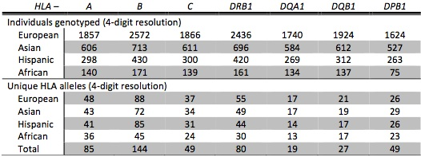
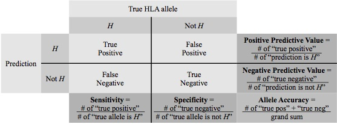

Introduction
HIBAG is a state of the art software package for imputing HLA types using SNP data, and it uses the R statistical programming language. HIBAG is highly accurate, computationally tractable, and can be used by researchers with published parameter estimates (provided for subjects of European, Asian, Hispanic and African ancestries) instead of requiring access to large training sample datasets. It combines the concepts of attribute bagging, an ensemble classifier method, with haplotype inference for SNPs and HLA types. Attribute bagging is a technique which improves the accuracy and stability of classifier ensembles deduced using bootstrap aggregating and random variable selection.
back to contents
Features
- HIBAG can be used by researchers with published parameter estimates (provided for subjects of European, Asian, Hispanic and African ancestries) instead of requiring access to large training sample datasets.
- A typical HIBAG parameter file contains only haplotype frequencies at different SNP subsets rather than individual training genotypes.
- SNPs within the xMHC region (chromosome 6) are used for imputation.
- HIBAG employs unphased genotypes of unrelated individuals as a training set.
- HIBAG supports parallel computing with R.
Citation
If you use HIBAG in a published analysis, please report the HIBAG version used and cite the appropriate publication or publications listed below:- Zheng X, Shen J, Cox C, Wakefield J, Ehm M, Nelson M, Weir BS. HIBAG – HLA Genotype Imputation with Attribute Bagging. Pharmacogenomics Journal (2014). doi: 10.1038/tpj.2013.18.
Download HIBAG
R/Bioconductor: http://www.bioconductor.org/packages/release/bioc/html/HIBAG.html
Download Published Parameter Estimates
The published parameters were estimated from HLA and SNP genotypes of multiple GlaxoSmithKline clinical trials (referred to as “HLARES”) and HapMap Phase 2. The HIBAG models were built from SNP markers common to the Illumina 1M Duo, OmniQuad, OmniExpress, 660K and 550K platforms. The training data consist of 1) HLARES data of European ancestry, 2) HLARES data of Asian ancestry (East & South Asia) and HapMap CHB+JPT, 3) HLARES data of Hispanic ancestry, and 4) African American HLARES data and 60 African parents of HapMap YRI.
HLA Nomenclature Updates (important update: April 2010)
Summary of training data set:
- 
Ethnic-specific models of two-field (4-digit) resolution, presented in Zheng et al. (2014):
- European ancestry, Prediction Quality, Validation using HLA data of the British 1958 cohort study (Wellcome Trust Case Control Consortium)
- Asian ancestry, Prediction Quality
- Hispanic ancestry, Prediction Quality
- African ancestry, Prediction Quality
Prediction accuracy was used to assess overall model performance,
defined as "the number of chromosomes with HLA alleles predicted correctly"
over "the total number of chromosomes". The standard statistical quantities of
prediction quality for a specific HLA allele H:

Examples
- The pre-fit HIBAG models for HLA genotype imputation:
library(HIBAG)
# Load the published parameter estimates from European ancestry
model.list <- get(load("European-HLA4.RData"))
#########################################################################
# Import your PLINK BED file
#
yourgeno <- hlaBED2Geno(bed.fn=".bed", fam.fn=".fam", bim.fn=".bim")
summary(yourgeno)
# HLA imputation at HLA-A
hla.id <- "A"
model <- hlaModelFromObj(model.list[[hla.id]])
summary(model)
# HLA allele frequencies
cbind(frequency = model$hla.freq)
# SNPs in the model
head(model$snp.id)
# "rs2523442" "rs9257863" "rs2107191" "rs4713226" "rs1362076" "rs7751705"
head(model$snp.position)
# 29525796 29533563 29542274 29542393 29549148 29549597
# best-guess genotypes and all posterior probabilities
pred.guess <- predict(model, yourgeno, type="response+prob")
summary(pred.guess)
pred.guess$value
pred.guess$postprob
- Build a HIBAG model for HLA genotype imputation:
library(HIBAG)
# Import your PLINK BED file
geno <- hlaBED2Geno(bed.fn=".bed", fam.fn=".fam", bim.fn=".bim")
summary(geno)
# The HLA type of the first individual is 01:02/02:01, the second is 05:01/03:01, ...
train.HLA <- hlaAllele(geno$sample.id, H1=c("01:02", "05:01", ...),
H2=c("02:01", "03:01", ...), locus="A")
# Or the HLA types are saved in a text file "YourHLATypes.txt":
# SampleID Allele1 Allele2
# NA001101 01:02 02:01
# NA001201 05:01 03:01
# ...
D <- read.table("YourHLATypes.txt", header=TRUE, stringsAsFactors=FALSE)
train.HLA <- hlaAllele(D$SampleID, H1=D$Allele1, H2=D$Allele2, locus="A")
summary(train.HLA)
# Selected SNPs, two options:
# 1) the flanking region of 500kb on each side,
# or an appropriate flanking size without sacrificing predictive accuracy
snpid <- hlaFlankingSNP(geno$snp.id, geno$snp.position, "A", 500*1000)
# 2) the SNPs in our pre-fit models
model.list <- get(load("European-HLA4.RData"))
snpid <- model.list[["A"]]$snp.id
# Subset training SNP genotypes
train.geno <- hlaGenoSubset(geno, snp.sel=match(snpid, geno$snp.id))
# Building ...
set.seed(1000)
model <- hlaAttrBagging(train.HLA, train.geno, nclassifier=100, verbose.detail=TRUE)
summary(model)
# Save your model
model.obj <- hlaModelToObj(model)
save(model.obj, file="your_model.RData")
# Predict ...
model.obj <- get(load("your_model.RData"))
model <- hlaModelFromObj(model.obj)
summary(model)
# best-guess genotypes and all posterior probabilities
pred.guess <- predict(model, newgeno, type="response+prob")
summary(pred.guess)
pred.guess$value
pred.guess$postprob
- Build and predict in parallel:
library(parallel)
library(HIBAG)
# Import your PLINK BED file
geno <- hlaBED2Geno(bed.fn=".bed", fam.fn=".fam", bim.fn=".bim")
summary(geno)
# The HLA type of the first individual is 01:02/02:01, the second is 05:01/03:01, ...
train.HLA <- hlaAllele(geno$sample.id, H1=c("01:02", "05:01", ...),
H2=c("02:01", "03:01", ...), locus="A")
# Or the HLA types are saved in a text file "YourHLATypes.txt":
# SampleID Allele1 Allele2
# NA001101 01:02 02:01
# NA001201 05:01 03:01
# ...
D <- read.table("YourHLATypes.txt", header=TRUE, stringsAsFactors=FALSE)
train.HLA <- hlaAllele(D$SampleID, H1=D$Allele1, H2=D$Allele2, locus="A")
summary(train.HLA)
# Create an environment with an appropriate cluster size
cl <- makeCluster(8)
# Building ...
set.seed(1000)
hlaParallelAttrBagging(cl, train.HLA, geno, nclassifier=100, auto.save="AutoSaveModel.RData")
model.obj <- get(load("AutoSaveModel.RData"))
model <- hlaModelFromObj(model.obj)
summary(model)
# best-guess genotypes and all posterior probabilities
pred.guess <- predict(model, yourgeno, type="response+prob", cl=cl)
summary(pred.guess)
pred.guess$value
pred.guess$postprob
Version History
- Version 1.4.0 (Apr 2015): Bioconductor release version
- Version 1.2.0 (Jul 2013): Add genome assembly information (e.g., hg19)
- Version 1.0.0 (Mar 2013): Minor bug fixes
- Version 0.9.1 (Jun 2012): First public release of HIBAG
Resources
- Allele Frequency Net Database (AFND): http://www.allelefrequencies.net
- IMGT/HLA Database: http://www.ebi.ac.uk/imgt/hla
- HLA Nomenclature: G Codes and P Codes for reporting of ambiguous allele typings
- GlaxoSmithKline (GSK): http://www.gsk.com
- International HLA and Immunogenetics Workshop (IHIWS): http://ihiws.org